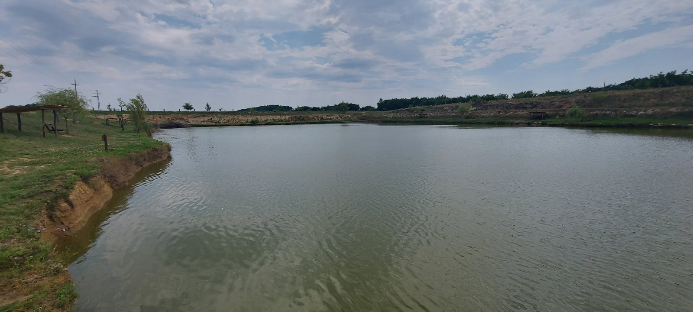

Üdvözöllek a Csepp-tó Sporthorgásztó oldalán

Budapesthez közel kellemes környezetben jól bejáratott horgásztó. A halőrházban büfé található, a Csepp-tó sporthorgásztó várja a horgászni vágyókat a Pribelszki tanya mögött Monorierdőn.
Azzal a határozott céllal hoztuk létre a horgásztavat és a környékét, hogy Monorierdőn mindenki számára látogatható, kellemes közösségi helyet teremtsünk. Mivel a tó elsősorban horgásztó, csak a horgászat megzavarása nélkül látogatható.
A belépés ingyenes a horgászjegy ára fentebb olvasható. Belépés előtt kérjük a házirendet elolvasni, és a látogatás ideje alatt maradéktalanul betartani.